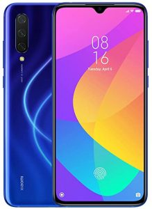

FTC — Claims Xiaomi Conducting Unauthorized Wireless Access
Xiaomi Corp, the third-largest mobile phone maker in the U.S., has filed a case against the United States.Xiaomi hopes that the court must force the US government to reverse the blacklist.The case names Defense Secretary Lloyd Austin and Treasury Secretary Janet Yellen.as claimants.
President Joe Biden, who only assumed office on 20 January, promoted Austin and Yellen to their new role, neither one of the two has their current position when the blacklist was released by the Trump administration.
Recently, Xiaomi Corp., a Chinese electronics company was slapped by the United States for its connection to the Android mobile operating system.
According to the complaint, Xiaomi Corp was involved in selling phones that circumvented the Federal Trade Commission’s ban on cellular phone spying devices.The investigation found that Xiaomi Corp conducted research and development of its own software that circumvented the ban.
'Xiaomi faces imminent, severe, and irreparable harm if the designation remains in place and the restrictions take effect,' the company said in the filing in the U.S. district court of Columbia.
This act brought forth a host of lawsuits from the U.S. Attorneys’ offices.One of which is accusing Xiaomi Corp of involvement in 'conducting unauthorized access to wireless communications systems without authorization.'Xiaomi Corp was also accused of giving out pirated copies of its mobile operating system to its customers and suppliers.
'Xiaomi is not owned or controlled or otherwise affiliated with the Chinese government or military, nor is it owned or controlled by any entity affiliated with the Chinese defense industrial base,' the smartphone maker said in the filing.
Another case involves a customer buying a phone and then paying for anti-spyware tools that were fake.The anti-spyware program did not detect any spyware on the phone, but the software company sent the phone back to the store claiming that the phone infringed their patents.The judge ordered Xiaomi Corp.to pay damages to this customer and also banned the company from selling its phones in the U.S.
The Chinese company has denied all charges.However, a letter from the U.S. Defense and Treasury departments stated that the Commerce Department is not convinced that the anti-spyware programs were necessarily designed to detect and remove vulnerabilities that would allow access to classified information or otherwise compromise sensitive personal data.
The company was given a chance to clear up their mistakes, which they did.The Defense and Treasury department did not state publicly whether or not the complaints will be pursued.
Before this latest development, Xiaomi Corp had already been sanctioned once by the U.S. government.In June 2020, Xiaomi was ordered to stop manufacturing devices that could help to carry out crimes.The company has been heavily fined for this violation.
It is unclear what the government was thinking when they punished Xiaomi; it is highly likely that the company was in some form of trouble due to its ties with Chinese organized crime figures.
Chinese organized crime figures have ties with technology companies that make high-tech equipment.It is known that these Chinese organized criminals are stealing intellectual property.Should the Chinese company be allowed to market products that assist these criminals?This is definitely a serious issue that needs to be looked into.
Xiaomi Corp is hardly alone in this fight.Many other companies that use the Chinese labor force to work in America have also been in the cross-fire.This all comes back to the question of free-market capitalism, and the ability of the government to protect its citizens from bad guys who want to take advantage of free markets.
Share on Facebook Tweet Follow us
Posted On: 2021-01-31T00:00:00
Posted By: Doris Mkwaya




Content Date: 2021-01-31
Download Date: 2021-07-08
Document ID: L0C04D9SO